5 Antenna-Coupled Detector Arrays
Parts of this chapter are adapted from (Mangu et al. 2024).
In Chapter \(\ref{ch:sosat}\), the
construction of a small aperture telescope for SO was discussed. In this
chapter, we focus on what happens after the telescope optics couple to
the focal plane. This mode of optical coupling is often done
using some antenna, which induces a signal on some detector such as a
bolometer. A bolometer is a type of detector that converts
incoming signal into heat, resulting in some measurable temperature
change. This signal at \(\mathcal{O}(100)\) mK stage then traverses
several temperature stages within the telescope to be read out at 300K
and converted to a time-ordered data format (see Chapter \(\ref{ch:cmbobs}\) for more information on
observations).
Focal planes are highly complex, with each pixel acting as an individual camera. Multichroic arrays, as are common now in CMB experiments, involve dual polarized antennas that carry signals with microstrip lines to multiplexing bandpass filters (i.e. diplexing if two bands, triplexing if three bands, etc.) and terminate at a bolometer. While SO uses diplexing filters, LiteBIRD will be using triplexing filters. Additional features depend on the mode of optical coupling. For example, feedhorn-coupled orthomode transducers utilize microstrip line to coplanar waveguide transitions. Multichroic pixels often also utilize crossunders when routing microstrip lines.
A critical component to reaching technological readiness is developing the optical coupling technology, which couples light onto the detectors and defines the detector beams. In first few sections, we review different types of CMB optical coupling that have been used successfully in experiments, focusing first on lenslet-coupling sinuous antenna arrays developed at Berkeley for Simons Observatory (and previously used in Simons Array). We then discuss how the optics couples to the detectors, and how that is read out in modern CMB experiments. At the end of the chapter, we provide a comprehensive look at the low-frequency SO arrays. Note that Berkeley will also serve as a fabrication house for CMB-S4 (which will use feedhorn-coupled orthomode transducers (OMTs) like the SO mid- and high-frequency arrays) and LiteBIRD (which will use both optical coupling technologies).
This chapter follows a long history of successful antenna-coupled detector array work in the CMB community. Useful dissertations for further reading include (O’Brient 2010; Aritoki Suzuki 2013; A. J. Cukierman 2018), which provide detailed context to Berkeley’s lenslet-coupled sinuous array development history. For excellent resources to better understand bolometers, please turn to (Irwin and Hilton 2005; “Bolometers for Infrared and Millimeter Waves” 1994; Gildemeister 2000). Finally, to understand major sources of noise and other technical considerations for readout and detectors, good details are provided in (Abitbol et al. 2017; Charles A. Hill 2020; K. S. Arnold 2010).
Finally, it is necessary to include a small note on the design and simulation software used for research discussed in this chapter:
ANSYS High Frequency Structure Simulator (HFSS) is a 3-D finite element method (FEM) simulator used extensively in this dissertation for optical coupling simulations.
Sonnet Software is a 2.5-D FEM simulator which is useful for understanding microwave components from a fabrication perspective. Different thin films can be defined and stacked to tune bandpass filters, microstrip lines, impedance transformers, and more during simulation.
Keysight Advanced Design System (ADS) is a circuit and electromagnetic simulator, which is useful for simulating circuit elements before translating them into thin films for Sonnet simulations. We often just use the circuit simulator component, since the electromagnetic simulator has historically produced incorrect results compared to e.g. HFSS.
TannerTools L-Edit is an integrated circuit (IC) design software where the final pixel designs are drawn, routed, and used for fabrication.
5.1 Lenslet-Coupled Sinuous Antennas

Before diving into lenslet-coupled sinuous antennas, remember that dipole antennas are a useful first-principles study described thoroughly in many electromagnetics and antenna textbooks. They often drive more complicated antenna geometries, and are also often feeds for other antennas like the horn antenna. Additionally, double-slot dipole antennas (briefly described in Section \(\ref{sec:ch5:otheroptcouping}\) and Figure \(\ref{fig:ch5:miscantenna}\)) are an excellent simulation replacement for a sinuous antenna when narrow-band, quick, computationally inexpensive simulations are required to test other optical coupling geometries and parameters (e.g. new anti-reflection coating designs, coupling between neighboring pixels, etc). Figure \(\ref{fig:ch5:miscantenna}\) shows the simulation model used for a double-slot dipole antenna on HFSS, where four-fold symmetric boundary conditions are used to drastically reduce computational time and cost. Many of the resources supplied at the beginning of this chapter also contain excellent resources on understanding these antennas.
The lenslet-coupled sinuous antenna (see Figures \(\ref{fig:ch5:sinuous}\) and \(\ref{fig:ch5:lpt}\)) is a planar, log-periodic slot antenna with an extended hemispherical lenslet sitting on top. We can begin by understanding the significance of this statement. Planar antennas are advantageous for making compact, high-density, less complex 3-D focal planes. This allows for easier scaling of detectors required to achieve sensitivities needed for current and next-generation CMB experiments.
Slot antennas are effective duals of wire antennas, where the geometry is instead cut from an infinite ground plane. Thus the metal and slot antennas have similar radiation patterns, but the electric and magnetic fields roughly flip. See Figure \(\ref{fig:ch5:miscantenna}\) to see an example of this effect. Slot antennas provide two primary advantages outside of their planar nature. First, they allow for smoother integration with planar transmission lines often used such as microstrip lines or co-planar waveguides (CPWs). This is advantageous for CMB experiments, where the antenna must transfer the radiation to a detector (such as a bolometer) after going through a filter. Second, the ground plane acts as an effective RF shield for anything sitting behind the detector wafer. This additional layer of protection is particularly useful for electromagnetically sensitive elements like SQUIDs (see Section \(\ref{sec:ch5:tesreadout}\)). Note that CMB instruments usually contain several layers of RF and magnetic shielding (see Chapters \(\ref{ch:so}\) or \(\ref{ch:sosat}\) for examples).
Log periodic antennas are generally classified as frequency-independent antennas, where the impedance and radiation properties repeat every logarithmic period in frequency. Within this period, the oscillations are usually designed to be negligible and can be classified as generally frequency-independent. This valuable property of frequency-independence is a result of broadband antenna geometry construction, which usually involves several key considerations (see e.g. (Rumsey 1957) for more details):
Self-complementarity. That is, the antenna and its complement have identical geometries. This idea is closely tied with the concept of a slot antenna, in that the slot and the metal must have identical geometries to achieve self-complementarity. Imagine the input impedance of a metal or wire antenna is \(Z_{metal}\) and the dual (i.e. complementary) slot antenna has an input impedance \(Z_{air}\). We can use Babinet’s principle: \[Z_{metal}Z_{air} = \frac{\eta^2}{4},\] where \(\eta\) is the intrinsic impedance of the medium such that \(\eta = \frac{\lvert \textbf{E} \rvert}{\lvert \textbf{H} \rvert} = \sqrt{\frac{\mu}{\epsilon}}\) and \(\lvert \textbf{E} \rvert\) is the electric field strength, \(\lvert \textbf{H} \rvert\) is the magnetic field strength, \(\mu\) is the magnetic constant, and \(\epsilon\) is the electric constant. In free space, \(\eta\) becomes the impedance of free space where \(\mu = \mu_0\) is the permeability of free space and \(\epsilon = \epsilon_0\) is the permittivity of free space. This free space approximation breaks down in reality because the antenna are fabricated on some dielectric. For our purposes, this is a silicon-air half-space, which violates self-complementarity. Thus, these designs have an input impedance that oscillates with frequency, and we often make sure that \(Re(Z)\) oscillates about some desired impedance to couple a microstrip line to, and that \(Im(Z)\) oscillates about zero. See Figure \(\ref{fig:ch5:antennaimpedances}\) for a comparison of the sinuous antenna and double slot dipole impedance behavior. For more information on self-complementarity and Babinet’s principle, see (Deschamps 1959; Booker 1946).
Widening a resonant region increases bandwidth. See e.g. the bow-tie antenna compared to the dipole antenna. See Figure \(\ref{fig:ch5:miscantenna}\). The bow-tie antenna broadens the resonant regions of the dipole to make it slightly more broadband. However, the bandwidth is limited by the sharp current termination at the fin edges. The log-periodic class of antennas really branch from the bow-tie antenna, where the extensions to the log-periodic trapezoid and log-periodic toothed antennas are the next variations to alleviate the current-termination issue and achieve broadband geometries.
Using geometries that are angle-dependent instead of fixed physical length (like how dipole antennas resonate). See e.g. the spiral (Figure \(\ref{fig:ch5:miscantenna}\)) or sinuous antenna compared to the dipole antenna. Fixed lengths are associated with fixed wavelength resonances. Angle-dependent structures allow for self-scaling features. Note that it is often a useful exercise to approximate resonant structures as half-wavelength fixed lengths (e.g. analogous to dipole antenna) or one wavelength circumferences (e.g. any spiral geometry or wavelength loops) when analyzing a complicated antenna geometry. This is particularly handy when thinking of sinuous antenna behavior, which have features that can be approximated as either.

The planar antenna couples well to a dielectric extended hemispherical lenslet, a small hemispherical piece that sits on top of the antenna. In free space, an antenna will radiate bidirectionally. The dielectric pulls the electric fields such that most of the radiation pattern is skyward and less than \(5\%\) of the power sits in the backlobe. Often, high dieletric materials like silicon are favorable to maximize this effect. Backshorts are often used to recover backlobe power. Historically, flat backshorts sitting a \(\lambda/4\) distance behind the antenna are often used, where \(\lambda\) is usually the central frequency of the observation bands (see simulation set up in Figure \(\ref{fig:ch5:miscantenna}\)(e)). In Section \(\ref{sec:ch5:solf}\), a new backshort design is discussed to accommodate mechanical requirements for the multiplexing hardware. Additionally, the lenslet helps focus the beam onto the planar antenna. When a hemispherical lens sits on a rectangular dielectric half-space, the net result is an effective ellipsoid where the antenna can be the focal point of the geometry. This is often done by tuning the length of the dielectric half-space (i.e. the “extension length") with respect to the radius of the lenslet (see Section \(\ref{sec:ch5:solf}\) for an example of this result for SO).
The high dieletric constant (\(\epsilon \approx 11.7\)) of the silicon20 lenslet is an abrupt transition to free space, making the lens-air surface a highly reflective boundary condition. Thus, an anti-reflection (AR) coating is often placed on top of the lenslet to smoothen the transition. A single-layer quarter-wavelength (again, \(\lambda/4\) thickness for the central frequency of the desired band) would ideally use a material that is the square root of the substrate’s index of refraction. This allows roughly no reflections at the central frequency, with lower effectiveness as one deviates from there. This can be made more broadband with more layers of AR coating, but that can be tricky to implement in practice because layers can crack or pop off in cryogenic cycling. Thus, for the lenslet-coupled sinuous antenna, the AR-coated lenslet is really the bandwidth-limiting factor. Currently, meta-material AR coatings are being investigated for experiments like LiteBIRD as an innovative solution to this problem. Traditionally, layers of epoxy (\(\epsilon \approx 3.4\)) were used as coatings (e.g. in Simons Array), but SO is using a single layer of borosilicate glass (\(\epsilon \approx 3.4\)). This is a more uniform, commercial option rather than the traditional time-consuming method of mixing epoxy and making molds.
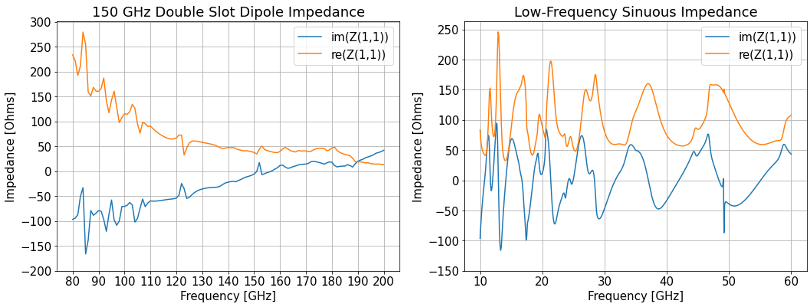
The sinuous antenna, as shown in Figure \(\ref{fig:ch5:sinuous}\), has a shape can be easily constructed with the following basic polar equation:
\[\phi = \alpha\sin\left[\pi\frac{\log\left(\frac{r}{R_{in}}\right)}{\log\tau}\right] \pm \delta \\ \text{ for } R_{in} \leq r \leq R_{in}\tau^n,\]
where \(n\) is the number of “cells" (i.e. switchbacks) and we can define \(R_{out} = R_{in}\tau^n\). The parameters of sinuous antenna are as follows:
\(\alpha\) and \(\delta\) are set to maintain a self-complementary structure, such that \(\alpha = 45^{\circ}\) and \(\delta = 22.5^{\circ}\). Deviations from self-complementarity distort beams, as described earlier. To maintain self-complementarity, \(\delta = \frac{\alpha}{2}\). Note that \(\alpha\) is set by the number of arms, where for \(N = 4\) arms for two linear polarizations, \(\alpha = \frac{360^{\circ}}{2N}\).
The inner (\(R_{in}\)) and outer (\(R_{out}\)) radius set the frequency bands. If we think of the \(\lambda/2\) regions between the switchbacks as effective dipole antennas where feature size is correlated with resonant wavelength, then it is easy to see that the inner part of the sinuous favorably couples to higher frequencies and the outer part of the sinuous favorably couples to lower frequencies. The low-frequency cutoff for some radiating region can be defined as: \[R_{rad} = \frac{\lambda_{rad}}{4(\alpha + \delta)\sqrt{\epsilon_{eff}}},\] where \(\epsilon_{eff}\) is the effective dielectric constant. However, cutting off the antenna at its band edges results in elliptical beams because current pools at the edges of the antenna. Thus, the sinuous is often extended in the inner and outer edges. Usually, a factor of roughly \(\sim4-5\) (e.g. \(R_{out}\) is 4-5 times the radius of the lowest frequency resonance) is sufficient, although this is not a strict requirement and always should be confirmed with simulation. Note that while a factor of 5 sounds large, it usually translates to just a few extra turns in the outermost wing of the antenna. Finally, like all log-periodic antennas, the antenna must be fed at the high-frequency end (Rumsey 1957). If driven at the low-frequency end, higher-order modes can get excited in the low-frequency regions because the physical area of the slot is larger. This will result in poor beams and low efficiency.
\(\tau\) is the growth rate (historically set as \(\tau = 1.3\) for Berkeley fabrication). Recall our discussion of log-periodicity, and note that if \(r\) changes by a factor of \(\tau^2\), then a phase shift of \(2\pi\) is introduced and \(\phi\) remains unchanged. Thus, the sinuous antenna is log-periodic in \(\tau\), with symmetric behavior in periods of \(\tau^2\). As seen in Figure \(\ref{fig:ch5:sinuous}\), a decreasing \(\tau\) means a decrease in frequency-dependent polarization rotation (colloquially known as “polarization wobble")21. This wobble is the frequency-dependent shift in the far-field polarization angle at zenith, and has a log-periodic oscillation. Visually, this can be understood by the oscillatory nature of the wings. Note where, for example, the sinuous antenna resonates for a given frequency, and compare it with the previous or next turn in the antenna. There is a small shift in the central resonance placement, which results in the periodic \(\tau^2\) oscillation in polarization axis. Compared to other similar log-periodic antenna geometries like the log periodic toothed antenna (see Figure \(\ref{fig:ch5:lpt}\)), the sinuous has a significantly lower wobble. See Figure \(\ref{fig:ch5:wobble}\) for different \(\tau\) studies done on the sinuous and LPT antennas. This is because the sinuous has interlocking arms between the switchbacks, which aligns the opposite wings to one another better, reducing wobble (DuHamel 1987). Because the sinuous antenna has a handedness (i.e. has two “senses"), our focal planes are tiled to cancel out the wobble, which will be equal and opposite between the two senses. Thus we often include a label on our pixels as \(Q_A, Q_B, U_A, \text{ and } U_B\) to define the Stokes parameters and sense of the antenna.

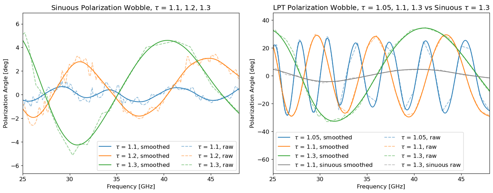
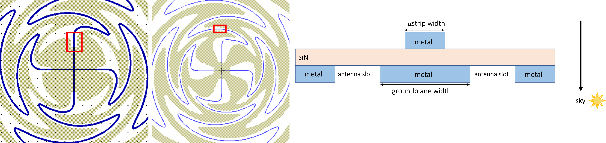
There are several ways a sinuous antenna geometry can be tuned. In practice, a planar geometry involves a microstrip line that winds in between the wings of the antenna slot (see Figure \(\ref{fig:ch5:sinuousmsgp}\)). The Simons Array sinuous antenna design, for example, had a center feed that was not self-complementary. The center feed was redesigned to maintain self-complementarity all the way to the center. Additionally, the microstrip line to groundplane ratio was studied. The Simons Array design had a 1:2 mictrostrip line to groundplane ratio near the antenna center, but literature recommends 1:5 or better (e.g. (Nurnberger and Volakis 1995)). This was improved by the center feed redesign. Optimizing a single pixel has involved playing with \(\tau\) to decrease polarization wobble, and lower \(\tau\)s are even more feasible for low-frequency designs. Additionally, different microstrip line widths were probed to account for deviations from simulation in the fabrication process. Probing different microstrip line widths can help understand antenna to microstrip line coupling as well as the effects of microstrip line to ground plane ratio. The original antenna design had a \(\tau\) of 1.3, \(R_{in}\) of 24\(\mu\)m, microstrip line width near the antenna center at 1.8\(\mu\)m, and a microstrip line to groundplane ratio of 1:2. The updated design in the image has a \(\tau\) of 1.3, \(R_{in}\) of 87\(\mu\)m, microstrip line width near the antenna center at 0.8\(\mu\)m, and a microstrip line to groundplane ratio of 1:12.5. This is one of several designs that were fabricated, with the current SO LF design using a 1.8\(\mu\)m microstrip line width. Note that \(\tau\) of 1.2 also is a feasible candidate, which would both improve polarization wobble and improve the microstrip line to groundplane ratio.
5.2 Other Types of CMB Optical Coupling

In this subsection, four major types of optical coupling will be covered, shown in Figure \(\ref{fig:ch5:cmboptcoupling}\): lenslet-coupled double slot dipole antennas, lenslet-coupled sinous antennas, dipole phased arrays, and the feedhorn-coupled OMTs.
Lenslet-coupled double slot dipole antenna: In the POLARBEAR experiment, a dual-polarized version of a traditional slot dipole antenna was used (see Figure \(\ref{fig:ch5:cmboptcoupling}\)(a)) (K. Arnold et al. 2012; Myers et al. 2005; K. S. Arnold 2010). The double-slot dipole antenna is a planar, half-wavelength antenna. A lenslet focuses light towards antenna. This double-slot dipole antenna was an early version of planar focal planes that the field started gravitating towards from bulkier 3-D structures like the Planck horn arrays. Any slot dipole antenna usually has 25-30% fractional bandwidth due to its geometry. The broad single dipole radiation pattern can be made narrow and more directional by placing another dipole antenna a quarter wavelength away. Two polarizations can be overlaid on top of each other because the fields are perfectly orthogonal. For maximum constructive interference at zenith and nadir, the dipoles are excited in phase by being fed in opposite directions by two microstrip lines \(180^\circ\) out of phase at the center of the slots. When a dielectric is placed on top, the effective resonance changes and the lengths must be adjusted accordingly. Thus, a silicon lenslet changes the resonant length to be roughly \(\lambda/3\) where \(\lambda\) here would be the free-space central wavelength. These antennas have highly stable polarization angles with respect to frequency, have round beams, and are simple to fabricate.
Lenslet-coupled sinuous antennas: The need for more detectors across more frequency bands motivated dichroic pixel designs. This movement to broadband antennas led Berkeley towards first using lenslet-coupled sinuous antennas in the Simons Array (Aritoki Suzuki 2013; Aritoki Suzuki et al. 2012, 2018; A. Suzuki et al. 2016; Edwards et al. 2012). See Figure \(\ref{fig:ch5:cmboptcoupling}\)(b) for SO and SPT-3G sinuous designs. The sinuous is ultra-wide bandwidth, easy to fabricate, scalable, and planar. Unlike most other log-periodic antennas its frequency-dependent polarization rotation is comparatively small. Besides the frequency-dependent polarization rotation, another technical challenge is the anti-reflection coatings, which are the bandwidth-limiting factor for this technology. See previous section for a more detailed review on lenslet-coupled sinuous antennas.
Dipole phased arrays: Dipole phased arrays have been successfully used in BICEP/Keck array experiments (see Figure \(\ref{fig:ch5:cmboptcoupling}\)(c)) (P. A. R. Ade et al. 2015; Bock et al. 2009). In phased arrays, the antenna are phase separated such that the superimposing beams create a uniform radiation pattern in a desired direction (here, skyward). This optical coupling technology is a very efficient use of focal plane space (since phased arrays work together), has a flat geometry, does not utilize complex 3-D structures, and thus does not run into coefficient of thermal expansion mismatch issues. The anti-reflection coating is quarter-wavelength quartz tiles sitting on top of a silicon substrate over the antenna layer. Technical challenges associated with this design include needing uniform material properties (phased arrays and associated microstrip lines require high uniformity), long microstrip lines to couple to the antenna (long microstrip lines are lossy), and bandwidth limitations due to the slot dipole antenna.
Feedhorn-coupled OMTs: The feedhorn-coupled OMT has been successfully used in several experiments, including ACT and SPIDER (McMahon et al. 2009; Datta et al. 2016; Hubmayr et al. 2016). See Figure \(\ref{fig:ch5:cmboptcoupling}\)(d) for SO designs. The OMT is a waveguide polarization diplexer, which couples to scalable, direct-machined, spline-profiled feedhorns used by SO (Simon et al. 2018). With recent advancements, this is scalable with direct machining. The beam pattern is defined by the horn geometry. The OMT is made broadband (analogous to e.g. a bow-tie antenna versus dipole antenna), and couples the split polarizations into co-planar waveguides (CPWs). The signal then transitions to a standard microstrip line, where it eventually meets bandpass filters. Technical challenges include difficulties in achieving a very wide bandwidth, getting very round beams, or using focal plane space efficiently. Achieving two bands can be tough because the waveguide gets overmoded, leading to beam distortions and sidelobes.
5.3 Microwave Components
Here we briefly summarize properties of microwave components that sit between the antenna and the bolometer. A microstrip line carries the signal from the antenna, which gets split by bandpass filters until it gets terminated at the bolometer. Along the way, impedance transformations are often required, and crossunder features are utilized to route overlapping microstrip lines. More rigorous discussion of these components can also be found in (Pozar 2005; Aritoki Suzuki 2013; A. J. Cukierman 2018), and the specifics of the SO low-frequency designs are described in Section \(\ref{sec:ch5:solf}\). It is a useful exercise to simulate even the simplest of these components (e.g. the microstrip line) in Sonnet or HFSS, and then build up to designing filters from there.
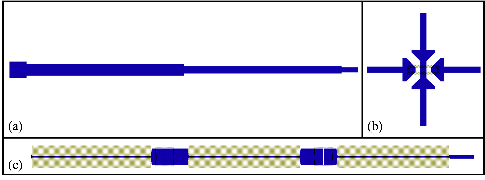
5.3.1 Microstrip Lines and Impedance Transformers
A microstrip line is a kind of transmission line constructed with a thin strip of metal sitting above a ground plane separated by a dielectric22. A microstrip line can be thought of as an unravelled coaxial cable, with the ground plane as the outer conductor, and the thin strip on top as the inner conductor. Basic parameters when tuning a microstrip line include the strip width and dielectric constant, thickness, and kinetic inductance. While the microstrip line is very easy to fabricate, it is a quasi-TEM transmission line due to fringing fields at the abrupt end of the thin metal strip. Because of the smallness of the cross-sectional size (which can be made much smaller than a wavelength) compared to the fields, this fringing is quite small and current dies out within a strip width from the thin strip. This is a particularly useful property near the center of the sinuous antenna, where feature size is quite small. The primary limitation on microstrip line dimensions comes from fabrication. Over the past decade, we have gone from attempting to fabricate microstrip line widths to couple to the sinuous at goal widths of 1.3 \(\mu\)m with an achieved width reliably between 1-2 \(\mu\)m (Aritoki Suzuki 2013), to fabricating a 0.8 \(\mu\)m width mictrostrip line, accurate within 0.1 \(\mu\)m. This enabled starting studies on microstrip line to groundplane ratio discussed in the previous section, where we have fabricated widths between 0.8-2.0 \(\mu\)m to test how well the antenna couples to microstrip line in practice. These tests are ongoing.
While antennas are usually in the \(\sim50 \Omega\) regime, our filters require usually \(\sim10 \Omega\), crossunders usually require \(\sim30 \Omega\), and the TES termination usually require \(\sim10 \Omega\). An abrupt change in impedance from the antenna to the filter is analogous to the abrupt transition from the silicon lenslet to free-space, causing this interface to be highly reflective and radiate away much of the power. Thus, just as the AR coating smoothens the transition, we incorporate a smooth transition in impedance. A tapered line width using a stepped Dolph-Chebyshev profile (McGinnis and Beyer 1988) is implemented to achieve \(\lesssim1\%\) loss over long microstrip lines spanning several wavelengths (e.g. from antenna to filter is usually \(\mathcal{O}(10\lambda)\)). An example of this microstrip line impedance transformer is shown in Figure \(\ref{fig:ch5:uwavecomponents}\)(a).
5.3.2 Crossunder
The sinuous antenna is differentially fed, dual-polarized, and planar, making it inevitable that microstrip lines will need to pass over or under each other to be routed to their respective filters and bolometers. While this can be solved post-fabrication with wire bonds, it is cleaner to create fabricated structures to handle this issue using either crossovers or crossunders. Crossovers require two extra fabrication steps where a dielectric is deposited, after which a metal strip layer can be added to cross over the other microstrip line. It is easier to just use crossunders and utilize the same three layers as the microstrip lines. At the point of crossing, a via connects one microstrip line to the ground plane layer which then re-emerges on the other side with another via. Of course, this section of the ground plane is not connected to true ground as shown in Figure \(\ref{fig2}\)(e). Since this ground plane is being used as a true ground plane here, the inductance at this crossing point is very high, which is compensated for with a widening of the microstrip line shown (roughly to \(\sim4 \mu\)m for a \(\sim30 \Omega\) impedance at crossing). The crossing point of the microstrip lines require thin strip widths to reduce crosstalk. Because of the small, closely packed features in these crossunders, this can be challenging to fabricate without shorting the layers. Both Simons Array and SO low-frequency wafers successfully use crossunders in their wafers. An example of this crossunder feature is shown in Figure \(\ref{fig:ch5:uwavecomponents}\)(b).
5.3.3 Filters
On-wafer, planar band-defining filters simplify bulky optical filtering requirements in the telescope, thereby also reducing spurious signals and ghosting from optical elements in the chain. Normally, we use multiplexing bandpass filters (BPFs) to define band edges, with all BPFs stemming from a common node. (Thus, two bands require diplexer, three bands require triplexers, and so on.) It is thus beneficial to make sure the bands do not overlap too much, and avoid atmospheric absorption lines as shown in Figure \(\ref{fig:ch3:sosite}\). We have also at times utilized low-pass filters (LPFs) in series to cut out-of-band high frequency resonances that are a product of the lumped element filter geometries (particularly for LF bands). This lumped element approach is well-suited for fabrication and mates well with microstrip lines.
Our designs use the insertion-loss method to determine the filter parameters, which provide a controlled way to tune desired characteristics (given that ideal filters with no insertion loss in the passband are impossible to design in practice). If we consider the filter taking signals from port 1 to port 2, we can define the power-loss ratio as:
\[\label{eqn:ch5:plrgen} P_{LR} = \frac{P_{in}}{P_{out}} = \frac{1}{(1 - \Gamma(\omega))^2} = \frac{1}{\lvert S_{21}\rvert^2},\]
where \(\Gamma (\omega) = \frac{Z_{in} - 1}{Z_{in} + 1}\) is the reflection coefficient. The insertion loss is thus:
\[IL = 10\log_{10}P_{LR}\]
Defining the power-loss ratio determines the style of filter we are designing. For example, a Butterworth (or maximally flat) filter gives the flattest passband response, a Chebyshev (or equal ripple) filter gives a sharper cutoff with equal ripple amplitudes, an elliptic function filter has a steeper roll-off with both passband and stopband ripples, and a linear phase filter provides a better linear phase response at the cost of a much higher attenuation. For our designs, a 3-pole Chebyshev filter is adequate. The power-loss ratio for a Chebyshev filter is:
\[\label{eqn:ch5:plrchebyshev} P_{LR} = 1 + k^2 T_N^2\left(\frac{\omega}{\omega_c}\right),\]
where \(\omega_c\) is the cutoff frequency, \(k^2\) gives the passband ripple level, N is the order of the filter (i.e. N = 3 for a 3-pole filter), and \(T_N\) is the Chebyshev polynomial of the first kind. A higher order filter (i.e. more poles) corresponds with more ripples and steeper roll-offs (almost like an extension to the Butterworth filter, which has no ripples but a shallower roll-off).
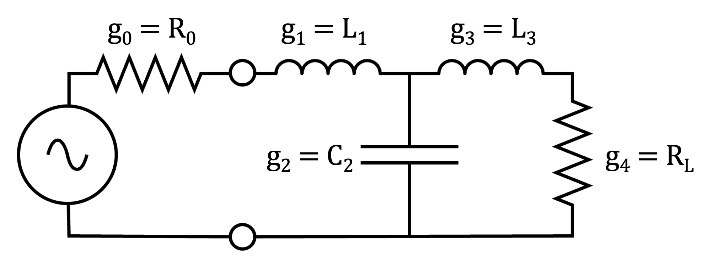
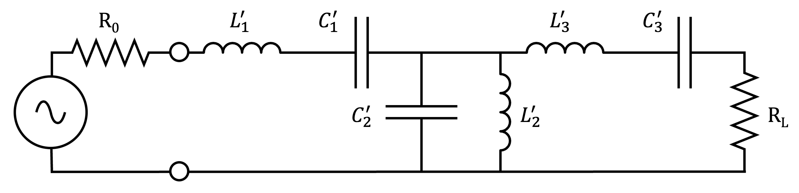
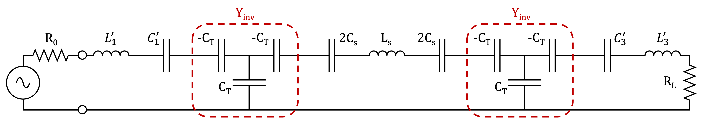
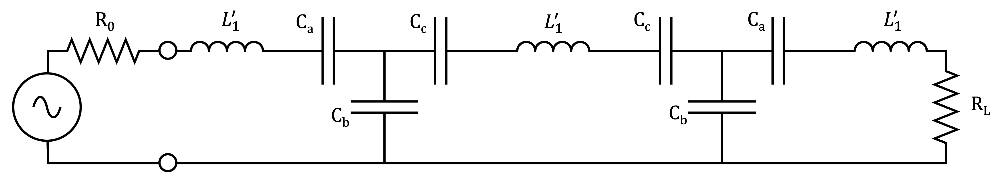
Once we have determined the filter specifications, we can start with a low-pass filter prototype and convert that to any desired high, bandpass, or bandstop filters with simple scalings and transformations. The process for this conversion to our bandpass designs is shown in Figure \(\ref{fig:ch5:filterxform}\). The low-pass prototype in Figure \(\ref{subfig:ch5:filterxform1}\) is used for transformations to our desired 3-pole Chebyshev filters23 because they are normalized (and thus scalable) in impedance and frequency. We can start with calculating the input impedance \(Z_{in}\) to get the power-loss ratio from (\(\ref{eqn:ch5:plrgen}\)) and then setting it equal to (\(\ref{eqn:ch5:plrchebyshev}\)). The allows us to then solve for \(L, C, R, \text{ and } \omega\).
We set \(R_0 = 1 \Omega\) and \(\omega_c = 1\) rad/sec for convenience. For 3-pole (and any odd order) Chebyshev filters, \(R_{0} = R_{L}\), but note that this is not always true for any filter. We use a ripple level of 0.5 dB, and can work with the associated solved element values:
\[\begin{aligned} g_1 &= 1.5963 \\ g_2 &= 1.0967 \\ g_3 &= 1.5963 \\ g_4 &= 1.0000 \\ \end{aligned}\]
From the prototype design, the desired source resistance \(R_0\) becomes a simple multiplicative factor in the impedance scalings. To transform the low-pass prototype to the bandpass24 prototype as shown in Figure \(\ref{subfig:ch5:filterxform2}\), we can start by doing the following frequency scaling:
\[\omega \rightarrow \frac{1}{\Delta}\left(\frac{\omega}{\omega_0} - \frac{\omega_0}{\omega}\right),\]
where the fractional bandwidth of the passband is \(\Delta = \frac{\omega_2 - \omega_1}{\omega_0}\) with central frequency \(\omega_0\) (usually chosen as \(\omega_0 = \sqrt{\omega_1\omega_2}\)) and band edges \(\omega_2\) and \(\omega_1\). We can then transform the series reactance and shunt susceptances with \(k\) referring to the \(k\)th element in the filter:
\[\begin{aligned} j\omega L &\rightarrow j\frac{1}{\Delta}\left(\frac{\omega}{\omega_0} - \frac{\omega_0}{\omega}\right)L_k = j\omega L'_k - j\frac{1}{\omega C'_k} \\ j\omega C &\rightarrow j\frac{1}{\Delta}\left(\frac{\omega}{\omega_0} - \frac{\omega_0}{\omega}\right)C_k = j\omega C'_k - j\frac{1}{\omega L'_k} \end{aligned}\]
We can see that the series inductor transforms to a series LC and a shunt capacitor transforms to a shunt LC. In Figure \(\ref{subfig:ch5:filterxform2}\), \(L'_1, L'_3, C'_1, C'_3\) are series and \(L'_2, C'_2\) are shunt LC elements. Combining the scaled source resistance, we get the following transformations of the element values to apply to the bandpass prototype:
\[\begin{aligned} L'_{k, series} &= \frac{R_0g_k}{\omega_0\Delta} \\ L'_{k, shunt} &= \frac{R_0\Delta}{\omega_0g_k} \\ C'_{k, series} &= \frac{\Delta}{\omega_0g_k\Delta} \\ C'_{k, shunt} &= \frac{g_k}{\omega_0R_0\Delta} \\ \end{aligned}\]
Now that we have our desired bandpass values, we want to transform this circuit into something less difficult to fabricate such as lumped elements. To accomplish this, we can use an impedance inverter (\(Y_{inv}\) in Figure \(\ref{subfig:ch5:filterxform3}\)) to invert the shunt LC to series. We can convert some shunt admittance \(Y_{shunt}\) to a series impedance \(Z_{series}\). In our design, this is accomplished by using two capacitor T-networks, each consisting of two effectively negative series capacitors and one positive shunt capacitor. This narrowband impedance transformer is parameterized by \(K\) where the inverter input impedance \(Z_{in} = \frac{K^2}{Z_L}\) for some load impedance \(Z_L\). We can perform the desired transformation from shunt to series by sandwiching a shunt impedance between two inverters, where \(K = \sqrt{Z_{shunt}Z_{series}}\). In Figure \(\ref{subfig:ch5:filterxform3}\), the subscript \(T\) denotes the T-network elements used in the inverter and \(s\) denotes the series elements. Thus, for our circuit, we find that \(K = \sqrt{\frac{L'_1}{C'_2}}\) when we set:
\[\begin{aligned} L_s &= L'_1 \\ C_s &= \frac{L'_2C'_2}{L'_1} = \frac{1}{L_s\omega_0^2} \end{aligned}\]
The T-network shunt capacitance \(C_T = \frac{1}{\omega_0K}\). Note that we split the series capacitance (\(C_s\)) into two (two capacitors with capacitance \(2C_s\)) to maintain symmetry in the circuit. Combining the series capacitances and relabelling, we get:
\[\begin{aligned} C_a &= \left(\frac{1}{C'_1} - \frac{1}{C_T}\right)^{-1} = \frac{C'_1C_T}{C_T - C'_1} \\ C_b &= C_T \\ C_c &= \left(\frac{1}{2C_s} - \frac{1}{C_T}\right)^{-1} = \frac{2C_sC_T}{C_T - 2C_s} \end{aligned}\]
This configuration can be seen in Figure \(\ref{subfig:ch5:filterxform4}\). Note that we, of course, require \(C_T\) to be greater than both \(C'_1\) and \(2C_s\). Our final transformation is to make the series capacitance physically smaller to fabricate, as it would take up too much room on a wafer as is. We use a \(Y-\Delta\) transform to accomplish this (named for the physical shapes of how the 3 component port transforms - i.e. from a \(Y\) or \(T\) shape to a \(\Delta\) or \(\Pi\) shape). The new component values are thus:
\[C_N = \frac{1}{C_n\left[(C_aC_b)^{-1} + (C_aC_c)^{-1} + (C_bC_c)^{-1}\right]}\]
where \(N = {A, B, \text{ or } C}\) and \(n = {a, b, \text{ or } c}\). This final configuration is shown in Figure \(\ref{subfig:ch5:filterxform5}\).
In fabrication, series inductors are constructed as CPWs, shunt capacitors use wide microstrip lines, and series capacitors resemble parallel plate capacitors using an isolated section of the ground plane for the other plate. The design of these bandpass filters that lie between the antenna and the detector are tuned and simulated on ADS and Sonnet to account for unavoidable parasitic conductances and inductances from this lumped element method.
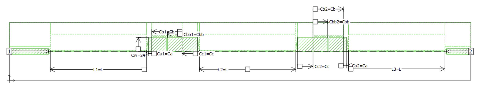
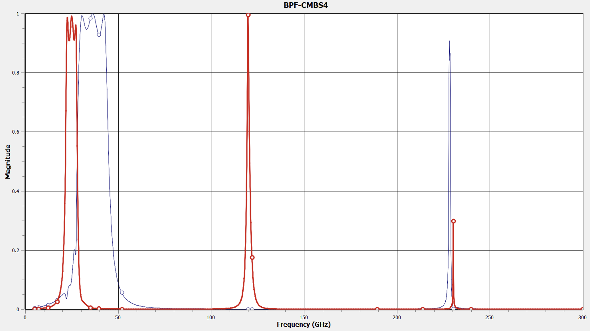
An example of a 40 GHz band BPF simulated and optimized on Sonnet for the CMB-S4 low-frequency arrays is shown in Figure \(\ref{fig:ch5:cmbs4_40bpf}\). The output of the proposed diplexing bandpasses for the 30GHz and 40GHz band is shown in Figure \(\ref{fig:ch5:cmbs4bpfoutput}\), where the full-width half-maximum bandwidth for the 30 GHz band was 21.5-28 GHz, and for the 40 GHz band was 28-45 GHz. Note that these designs and specifications are preliminary, and just shown for pedagogical purposes. An example of how the Sonnet design is carried over to L-Edit for fabrication purposes is shown in Figure \(\ref{fig:ch5:uwavecomponents}\)(c). An example of a final SO fabricated BPF taken from the L-Edit design can then be seen in Figure \(\ref{fig2}\)(a, c), which were constructed for the SO low-frequency arrays.
5.4 Detectors
5.4.1 Transition Edge Sensor Bolometers
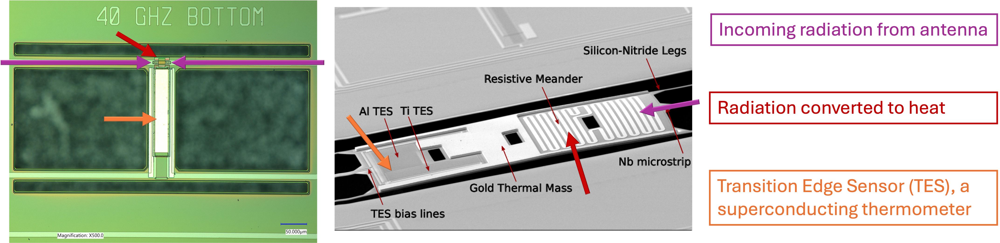
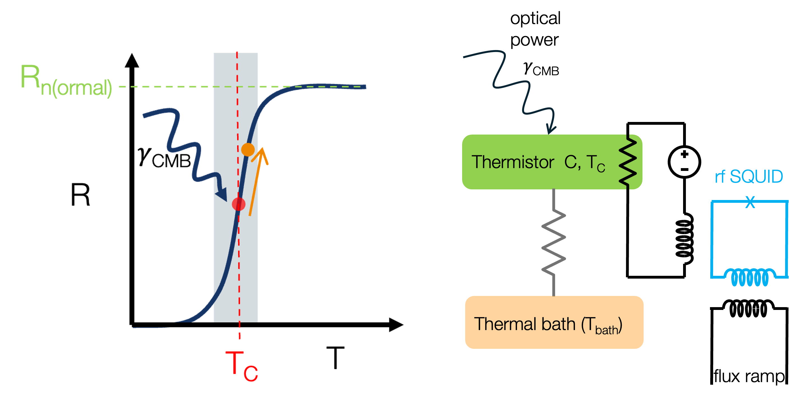
Once the antenna has coupled radiation onto a microstrip line and traversed impedance transforms, crossunders, and multiplexing filters, the signal eventually reaches the bolometer island (see Figure \(\ref{fig:ch5:tesoperation}\)). Most modern CMB experiments use transition-edge sensor (TES) bolometers, which utilize a steep, tunable superconducting transition of a metal film. A small temperature change corresponds to a large change in resistance (see Figure \(\ref{fig:ch5:tesbasics}\)), making this a highly sensitive device when an appropriate TES material (amongst other design choices) is chosen.
At the bolometer island, the radiation is converted to heat which is detected by the TES acting like a superconducting thermometer. As shown in Figure \(\ref{fig:ch5:tesbasics}\), the TES is voltage-biased to stabilize the TES. Consider the average bias power on the TES for some root-mean-square (RMS) bias voltage \(V_{bias}\) and bolometer resistance \(R_{bolo}\):
\[P_{elec} = \frac{V_{bias}^2}{R_{bolo}}\]
We can also define the steady state condition on the bolometer as the following, where \(P_{opt}\) is the optical power and \(P_{tot}\) gives the total power on the bolometer island. This island is weakly thermally linked to the thermal bath (i.e. the rest of the focal plane would be the thermal bath in a CMB telescope):
\[P_{tot} = P_{elec} + P_{opt}\]
To maintain the TES at its superconducting transition, \(P_{elec} + P_{opt}\) should remain constant at some \(P_{tot}\). As shown in Figure \(\ref{fig:ch5:tesbasics}\), when optical power \(P_{opt}\) (e.g. from a CMB photon) increases, this increases the temperature of the bolometer island, which in turn increases the bolometer resistance. Increasing the bolometer resistance decreases \(P_{elec}\) and helps maintain the sum of the powers to be constant. This inherent stability via electrothermal feedback allows steep transitions which directly enables highly sensitive and responsive detectors.
TES detectors are biased into their superconducting transition (or “critical") temperature \(T_C\) (see Figure \(\ref{fig:ch5:tesbasics}\)). We define \(C = dE/dT\) as the dynamical heat capacity, \(\bar{G}\) as the average thermal conductance of the thermal link, and \(G = dP_{tot}/dT\) as the dynamical thermal conductance of the thermal link. This allows us to define a TES’s saturation power \(P_{sat}\), which quantifies the power dissipated from the TES into the thermal bath:
\[P_{sat} = \bar{G}(T_C - T_{bath})\]
To describe the thermal power flow in the bolometer, we can look to energy conservation to write:
\[\begin{aligned} \label{eqn:ch5:bolo_consofE} P_{opt} + P_{elec} - P_{sat} &= \frac{dE}{dt} \nonumber \\ P_{opt} + \frac{V_{bias}^2}{R_{bolo}} - \bar{G}(T_C - T_{bath}) &= \frac{dE}{dT}\frac{dT}{dt} \end{aligned}\]
We can now consider a Fourier mode of frequency \(\omega\) when some additional time-dependent incoming optical signal \(\delta P_{opt}e^{i\omega t}\) induces some temperature change on the bolometer \(\delta T_{bolo}e^{i\omega t}\) (which in turn also induces a change in \(P_{elec}\)). In non-Fourier space, we can think of each power having a small perturbation such that \(P_X = P_{X,0} + \delta P_X\), where \(P_{X,0}\) is the steady-state condition. We can then write (\(\ref{eqn:ch5:bolo_consofE}\)) as:
\[\begin{aligned} \label{eqn:ch5:bigboloeqn} P_{opt, 0} + \delta P_{opt} + P_{elec, 0} + \delta P_{elec} &= P_{sat, 0} + \delta P_{sat} + \frac{dE}{dT}\frac{dT}{dt} \nonumber \\ P_{opt, 0} + \delta P_{opt}e^{i\omega t} + P_{elec, 0} + \frac{dP_{elec}}{dT_{bolo}}\delta T_{bolo}e^{i\omega t} &= \bar{G}(T_C - T_{bath}) + G\delta T_{bolo}e^{i\omega t} + i\omega C\delta T_{bolo}e^{i\omega t} \nonumber \\ P_{tot} + \delta P_{opt}e^{i\omega t} + \frac{dP_{elec}}{dT_{bolo}}\delta T_{bolo}e^{i\omega t} &= \bar{G}(T_C - T_{bath}) + (G + i\omega C)\delta T_{bolo}e^{i\omega t}, \end{aligned}\]
where we switch to Fourier space in the second line, and use \(P_{tot} = P_{opt, 0} + P_{elec, 0}\) in the last line. Normally, the TES is biased such that \(P_{tot} = P_{sat}\). As shown in Figure \(\ref{fig:ch5:tesbasics}\), the TES is saturated if \(T_{bolo} > T_C\) and thus \(P_{tot} > P_{sat}\). Usually the term saturation implies detectors that see too much optical power, and the term overbiased is used more often when the detector has been biased purposefully into its normal (or saturated) state. Similarly, if the TES has gone superconducting such that \(T_{bolo} < T_C\) thus \(P_{tot} < P_{sat}\), the the detector is considered latched. Note that the TES can be biased stably to a \(R_{frac}\) range where \(R_{frac} = R/R_n\) (see the figure), so the saturating and superconducting states are only reached when the bolometer temperature deviates too far from \(T_C\) and becomes unstable in the transition.
We define a dimensionless parameter \(\alpha\) that quantifies the steepness of the superconducting transition at the bias point:
\[\alpha = \frac{d(\log{R_{bolo}})}{d(\log{T_{bolo}})},\]
which allows us write \(\delta P_{elec}\) a bit differently in (\(\ref{eqn:ch5:bigboloeqn}\)) such that:
\[\begin{aligned} \frac{dP_{elec}}{dT_{bolo}} &= -\frac{V_{bias}^2}{R_{bolo}^2}\frac{dR_{bolo}}{dT_{bolo}} < 0 \nonumber \\ &= -\frac{P_{elec}\alpha}{T_C}, \end{aligned}\]
where the first line is derived from electrothermal feedback and is negative because \(dR/dT < 0\). We can then focus on the time-dependent part of (\(\ref{eqn:ch5:bigboloeqn}\)) to better understand the effect of the incoming optical power:
\[\begin{aligned} \delta P_{opt} &= \left[ \frac{P_{elec}\alpha}{T_C} + G + i\omega C\right]\delta T_{bolo} = G_{eff}\delta T_{bolo} \nonumber \\ &= (\mathcal{L}(\omega) + 1)G(1 + i\omega\tau_0)\delta T_{bolo}, \end{aligned}\]
where the coefficient on the small change in temperature acts as an effective complex thermal conductance, and can be written in terms of the loop gain \(\mathcal{L}(\omega)\) defined as:
\[\begin{aligned} \mathcal{L}(\omega) &= -\frac{\delta P_{elec}}{\delta P_{tot}} = -\frac{\delta P_{elec}}{\delta P_{opt} + \delta P_{elec}} \nonumber \\ &= \frac{\frac{P_{elec}\alpha}{T_C}}{\frac{P_{elec}\alpha}{T_C} + G(1 + i\omega\tau_0) - \frac{P_{elec}\alpha}{T_C}} \nonumber \\ &= \frac{P_{elec}\alpha}{GT_C(1 + i\omega\tau_0)} = \frac{\mathcal{L}}{1 + i\omega\tau_0}, \end{aligned}\]
where \(\tau_0 = C/G\) is the natural (i.e. steady state) time constant of the bolometer such that the gain rolls off as \(1/\tau_0 = \omega\) as in any first order system (i.e. a first order transfer function). Here, the DC (i.e. steady state or open loop) gain is defined as \(\mathcal{L} = P_{bias}\alpha/(GT_C)\).26 Since the TES is voltage-biased (DC27) to take advantage of electrothermal feedback, we can describe the responsivity of the bolometer by measuring its associate output current given the incident optical power:
\[\label{eqn:ch5:tesresponsivity} S_I = \frac{dI}{dP_{opt}} = -\frac{1}{V_{bias}}\frac{\mathcal{L}}{\mathcal{L} + 1}\frac{1}{1 + i\omega\tau_{eff}},\]
where the subscript \(I\) is to denote that this is the current responsivity, and we define the faster (i.e. responsivity rolls off at a higher frequency than loop gain) effective time constant \(\tau_{eff}\) as:
\[\tau_{eff} = \frac{\tau_0}{\mathcal{L} + 1}.\]
In the desirable high feedback regime where loop gain is high (i.e. \(\mathcal{L} \gg 1\), deep in the superconducting transition) and optical signals are slow (i.e. \(\omega \ll 1/\tau\)), (\(\ref{eqn:ch5:tesresponsivity}\)) becomes:
\[S_I = -\frac{1}{V_{bias}}\]
Thus, the bolometer becomes very linear, and is not dependent on the optical loading or its environment like fluctuations in the bath temperature. In this regime, the changes in \(P_{bias}\) perfectly compensate for the changes in \(P_{opt}\). While large loop gains are desirable, in practice it is challenging to both achieve a high loop gain and keep detectors stable. Also note that when we discuss “dark" bolometers, we are referring to a regime where \(P_{opt} = 0\). We can also see that the natural time constant is sped up by a factor of \(\mathcal{L} + 1\), and the loop gain \(\mathcal{L}\) scales with electric bias power. Thus optical detectors need less bias power compared to dark detectors (think of the electrothermal feedback). Less bias power implies a smaller loop gain, which means that optical detectors have slower time constants!
The TES current output is sensed and read out using superconducting quantum interference devices (SQUIDs), which are high gain and low input impedance magnetometers that convert the TES signal into a voltage. SQUIDs are constructed using superconducting coils with one (i.e. RF SQUID) or two (i.e. DC SQUID) Josephson junctions that utilize the AC or DC Josephson effect respectively. This signal is then usually further amplified and digitally read out warm outside of the cryostat (see Section \(\ref{sec:ch5:tesreadout}\)).
Now that we have described the TES in detail, it is useful to point out some design considerations that help tune the bolometer properties in fabrication (see bolometers in Figure \(\ref{fig:ch5:tesoperation}\)). Often, the best way to test bolometer designs is to fabricate variations of design parameters, and then measure the effects of these physical design variations on bolometric properties in a cryostat. Please note that this discussion is just a brief summary, as fabrication is a nuanced and complex process. The saturation power can be tuned with the thermal conductance of the thin legs that separate the bolometer island from the rest of the focal plane (i.e. “bath"). (The thermal conductance is usually tuned by changing the leg length while keep the width and cross sectional area constant.) Thus, the length of the thin bolometer legs determine \(G\), or how weakly linked the bolometer island is to the bath. The readout design (see Section \(\ref{sec:ch5:tesreadout}\)) determines the resistance of the TES, because this involves readout noise considerations (see topics on NEP in Section \(\ref{sec:ch3:sensitivity}\) and the next section). Resistive elements like the load resistor and TES can be tuned by changing physical size or film thickness of the chosen material. The transition temperature \(T_C\) is determined by the material of the TES as well as the specifics of the fabrication process used to yield the TES. For example, the SO LF aluminum manganese bolometers can achieve lower \(T_C\) with higher doping of manganese. The thermal annealing process also affects \(T_C\). A higher \(T_C\) can be a product of either a longer time or higher temperature of annealing. Finally, the time constant \(\tau_{TES}\) can be tuned by using BLNG (pronounced “bling"). The SO LF bolometers use palladium (Pd), while the BICEP/Keck bolometer shown used gold (Ag). Adding BLNG slows down the TES time constant (since the time constant scales as heat capacity). This time constant is bound by the readout requirements and the telescope sky sampling rate. If the TES time constant is too fast, then issues with detector stability and readout aliasing emerge. The readout time constant must be faster than the TES to sample signals properly. If the TES time constant is too slow, then this leads to issues with the sky sampling. The TES must be effectively able to sample the sky faster than the Nyquist frequency. This frequency scales roughly as (beam size)/(telescope scan speed) for constant elevation scans. If you scan too slow, however, \(1/f\) noise starts affecting the large angular scales.
5.4.2 Detector Noise
Here, we return to the discussion of noise equivalent power (NEP) from Chapter \(\ref{ch:so}\). Recall that NEP is defined as the incident power of the signal required to get a signal to noise ratio of 1 in 1 Hz of bandwidth (“Bolometers for Infrared and Millimeter Waves” 1994). Also recall that our goal is constructing focal planes with photon-noise limited detectors, where the dominant source of noise should be from the intrinsic uncertainty in the arrival rate of the photon due to its quantum mechanical nature.
We can decompose a detector’s NEP into all (white, uncorrelated, Gaussian) noise sources:
\[NEP_{det} = \sqrt{NEP_{\gamma}^2 + NEP_{Johnson}^2 + NEP_{g}^2 + NEP_{readout}^2},\]
where the definitions of the individual components are:
Photon NEP, \(NEP_{\gamma}\): This arises from uncertainties (i.e. quantum mechanical fluctuations) in the occupation number for arriving photons.
Johnson NEP, \(NEP_{Johnson}\): This Johnson noise is a product of the TES resistance fluctuating due to thermal perturbations in the charge carriers of the film. This NEP approaches 0 when the TES has a large \(dR/dT\) which is possible with a large loop gain. Additionally, \(NEP_{Johnson} \propto \sqrt{T_C}\), so a cold focal plane reduces Johnson NEP greatly (SO operates at \(\sim 100mK\)). Usually this noise is also subdominant to readout noise, and is usually considered negligible for CMB experiments.
Thermal carrier (or phonon) NEP, \(NEP_{g}\): This thermal carrier noise is sourced from thermal fluctuations in the weak link between the bolometer island and the thermal bath. A cold operating temperature again reduces this noise since \(NEP_g \propto T_C\).
Readout NEP, \(NEP_{readout}\): This is the noise from any readout electronics, which is an important and challenging design consideration for modern experiments as focal plane complexity and detector count increases. When considering readout noise, it is often useful to think in terms of the readout noise equivalent current (\(NEI_{readout}\))28: \[NEI_{readout} = S_INEP_{readout},\] where \(V_{bias} = \sqrt{R_{bolo}P_{elec}}\) in \(S_I\). Often, small \(R_{bolo}\) is desirable to minimize readout NEP. In fact, for microwave multiplexing systems as in SO (see Section \(\ref{sec:ch5:tesreadout}\)), \(R_{bolo} \simeq 8m\Omega\) which is very low and requires tight controlling of electronics29 such that \(R_{bolo}\) is not on the same order as parasitic impedances (usually \(\sim 10m\Omega\) for frequency domain multiplexing wiring schemes). For digital frequency multiplexing, for example, \(R_{bolo} \sim \mathcal{O}(1\Omega)\).
5.4.3 Kinetic Inductance Detectors
Although TES bolometers are currently the primary technology used by CMB experiments, there have been major efforts in the field to reduce focal plane complexity. Here we take a detour to discuss some ongoing interesting efforts that may influence future cosmology research and development. High detector counts for these experiments require high multiplexing factors, which can be achieved using e.g. Kinetic Inductance Detectors (KIDs). Scalability is currently a critical challenge for deploying thousands of detectors. High technical readiness of KIDs will be a competitive technology for future observatories. Current TES bolometers interface with SQUID amplifiers, which require at least four wirebonds per detector channel, and focal plane real estate for supporting circuitry. KIDs will reduce the number of delicate wirebonds per detector and the complexity of focal plane architecture.
KID-based technologies rely on the kinetic inductance of the superconductor, which is altered by incoming radiation. This intrinsic reactance from the kinetic inductance occurs below a superconductor’s transition temperature, and stems from the inertial, finite mass of charge carriers in a medium. For superconductors, these charge carriers are Cooper pairs, where the total inductive energy is equivalent to the kinetic energy of the Cooper pairs. A single incident photon may break Cooper pairs into quasiparticles, and so effectively change the kinetic inductance of the superconductor. A small change in the kinetic inductance paired with a capacitor creates a change in resonant frequency associated with such a microresonator. Thus, if a superconductor is placed in a resonator circuit, we can observe resonant frequency shifts for CMB observation.
A challenge with KIDs is achieving high quality factors for millimeter-wave observations. Different types of KID development are an active area of research: microwave KIDs (MKIDs), lumped element KIDs (LEKIDs), and thermal KIDs (TKIDs). MKIDs utilize an antenna-coupled microwave transmission line. LEKIDs use a direct-absorbing lumped element, which better couple photons to the resonator compared to MKIDs, but struggle with dual polarization or multi-band extensions. We will go into a little extra detail now to explain TKIDs. TKIDs take the principle of KIDs and operate similar to Transition Edge Sensors (TESs) in that the inductor is placed on a weakly thermally linked bolometer island along with a resistive heater (Figure \(\ref{fig:ch5:kidmux}\)(a)). This resistor is fed by the microstrip line-coupled-antenna array, and introduces thermal fluctuations on the bolometer island. This results in changes in quasiparticle density, which sparks a shift in the resonance frequency. Paired with unique capacitances as shown in Figure \(\ref{fig:ch5:kidmux}\), many detectors can be read out on a single line. By combining the principle of KIDs with the fabrication principles of TESs, TKIDs are compelling candidates for use in CMB detector arrays.
TKIDs have the high multiplexing factors of microwave multiplexing (see Section \(\ref{sec:ch5:tesreadout}\)), low noise of traditional TES bolometers, and do not require a SQUID on each channel to interface with the detector (Figure \(\ref{fig:ch5:kidmux}\)). SQUID-TES interfacing increases the complexity of the focal plane architecture and adds thermal load, limiting detector counts with traditional methods. Traditional time- and frequency-domain multiplexing such as those being used in Simons Array, BICEP/Keck, and ACT collaborations have achieved multiplexing factors of \(\sim\)O(100), but we can achieve more than an order of magnitude improvement with TKIDs and innovative RF multiplexing techniques.
5.5 TES Readout
As CMB experiments have moved towards more detectors, the need to reduce focal plane complexity, thermal loading on the coldest stages, and more cost-efficient architecture has led to advancements in detector readout strategies. Several techniques attempt to efficiently multiplex 100s to 1000s of detectors by reading them out on a single wire and set of amplifiers. In this section, we briefly describe three different kind of multiplexing used in CMB experiments currently: digital frequency, time domain, and microwave multiplexing.
5.5.1 Digital Frequency Multiplexing
Digital frequency multiplexing (Dfmux) has been used by the EBEX, Simons Array and SPT collaborations, and will be used in LiteBIRD. The highest multiplexing factor for Dfmux used in the field was by SPT-3G, which was \(\times68\) mux factor (Montgomery et al. 2022) (see Figure \(\ref{fig:ch5:dfmux}\))30. Dfmux operates at frequencies usually ranging from 100s of kHz to 10s of MHz with AC bias voltages (Bender et al. 2014; Montgomery et al. 2022; Abitbol et al. 2017). Combs of LC resonators set these frequencies, each paired with a voltage-biased TES. These resonant frequencies must not overlap and have adequate spacing between them, setting the bandwidth - thus, more recent generations of Dfmux have shifted towards using MHz tones. Incoming optical signals effectively amplitude-modulate the waveform similar to AM radio signals, and output some current waveform that are summed with the other carrier tones, amplified at the warmer cryogenic stages, and then demodulated on the warm 300K side to extract the sky signal.
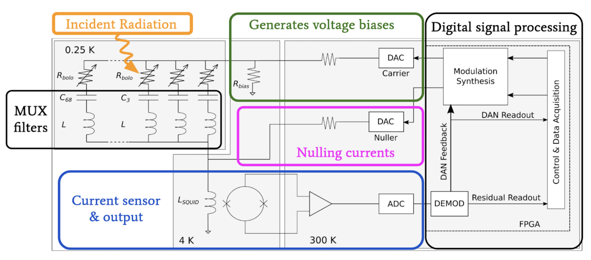
5.5.2 Time Domain Multiplexing
Time domain multiplexing (TDM) has been used by the ACT and BICEP/Keck Array collaborations, and will be used in CMB-S4. See Figure \(\ref{fig:ch5:tdm}\) for a NIST-designed TDM multiplexing chip design. The highest multiplexing factor used in the field for TDM is by the Q&U Bolometric Interferometer for Cosmology (QUBIC), with a \(\times128\) mux factor (Prêle et al. 2016). TESs are voltage-biased, and each TES is paired with a single SQUID amplifier at this first stage. The readout is organized in a 2-D logical grid, where rows are read out sequentially at some time interval (similar to how LED signs operate). Each column is one chain and routes to a single SQUID series array amplifier, and then is further amplified from there until it is read out by the warm electronics as the sky signal.
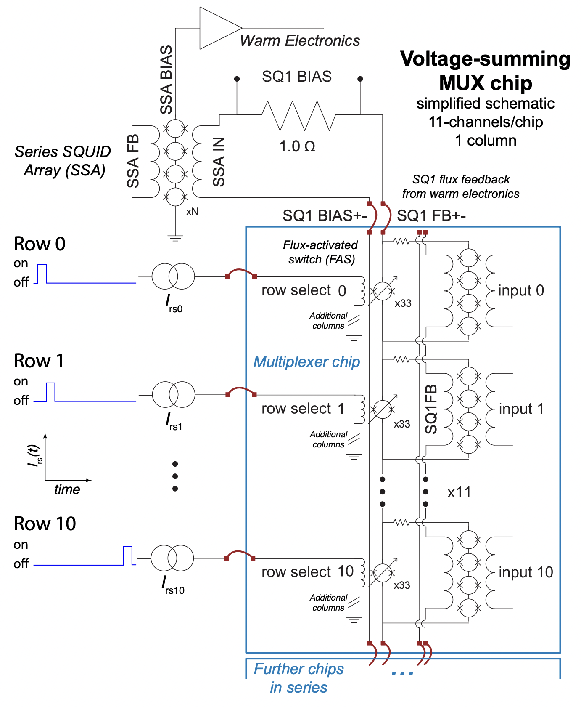
5.5.3 Microwave Multiplexing
Microwave multiplexing (\(\mu\)mux) is currently being deployed by Simons Observatory, and has shown efficacy in e.g. a retrofitted Keck array receiver and MUSTANG-2 (A. Cukierman et al. 2019; Stanchfield et al. 2018). More details on \(\mu\)mux utilized in SO can be found in (Yu et al. 2023; E. Healy et al. 2022). Unlike TDM or Dfmux, microwave multiplexing allows for \(\mathcal{O}(2000)\) detectors to be read out on a single chain using GHz frequency phase modulation for DC-biased TESs. SO uses the SMuRF (SLAC Microresonator RF electronics) system developed by SLAC. Resonators have a unique frequency between 4-8GHz (SO only uses 4-6 GHz, as the full range is not required). Each resonator’s phase shifts as a response to changes in the flux in the SQUID loop, which induces a change in the effective inductance in the resonator. A kHz flux ramp (a 4 kHz sawtooth waveform) stabilizes the RF SQUIDs, and drives flux quanta through the SQUID. SMuRF’s tone tracking system uses a probe tone to track the shifting resonance, which is effectively a flux ramp-modulated frequency shift. Each readout line is then amplified at the 4K and 40K stages, and then digitized into the desired sky signal by the warm electronics.
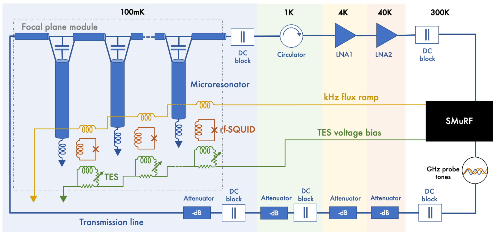
5.6 Simons Observatory Low-Frequency Detectors
Recall from previous chapters that the Simons Observatory (SO) will make multi-frequency CMB maps from the Atacama Desert in Chile. SO is nominally aiming for science observations starting in 2024 with \(\sim\)68,000 detectors to perform degree-scale surveys with three small aperture telescopes (SATs) and arcminute-resolution surveys with the large aperture telescope (LAT). These telescopes are specifically designed to reach key science targets including constraints of the tensor-to-scalar ratio r, the effective number of relativistic species \(N_{eff}\), the sum of neutrino masses \(\Sigma m_{\nu}\), deviations from the cosmological constant, galaxy evolution feedback efficiency, and the epoch of reionization (The Simons Observatory Collaboration 2019). Galactic and extra-galactic foreground-subtracted CMB maps are critical to achieving these science goals (Smoot 1999; Hinshaw et al. 2009; Komatsu et al. 2009; Krachmalnicoff, N. et al. 2016; Sponseller and Kogut 2022; The Simons Observatory Collaboration 2019; K. N. Abazajian et al. 2016; Kamionkowski and Kovetz 2016; Y. Akrami et al. 2020). To achieve sensitivities that enable this science, SO will be observing across six spectral bands from 27 to 285 GHz. Focal planes across the telescopes will be dichroic, observing at the Low-Frequency (LF) bands centered at 27 and 39 GHz, the Mid-Frequency (MF) primary CMB bands centered at 93 and 145 GHz, and the Ultra-High-Frequency (UHF) bands centered at 225 and 285 GHz. The UHF bands will map thermal dust emission and the LF bands will map synchrotron emission, which are the dominant emissions in galactic polarization signals (The Planck Collaboration 2020a, 2020b; Y. Akrami et al. 2020). Here, we focus on the LF focal plane development studying galactic synchrotron emission.
5.6.1 Design and Optimization
Here we briefly review design considerations and simulation-based optimizations for the SO LF pixel.
5.6.1.1 Overview: Optical Stack and Pixel Design
All SO telescopes have hexagonally tiled focal planes. Each hexagonal tile is called a Universal Focal Plane Module (UFM), and houses optical and readout components. UFMs are interchangeable (i.e. “universal") between any of the SATs and LAT. For each LF-UFM, a Detector and Optical Stack (DOS) mates with a Universal Mutiplexing Module (UMM). Each UFM consists of 37 LF pixels, with 4 optical detectors and 2 dark detectors per pixel. Only one of each pair of dark detectors is bonded to be read out. The UMM consists of a routing wafer and multiplexer chips to enable the microwave multiplexing scheme that reads out \(O(1000)\) detectors per readout channel (McCarrick, Arnold, et al. 2021b; E. Healy et al. 2022). The LF-DOS design includes an interlocking flange to mate with other UFMs on the focal plane, the lenslet array on the detector wafer, the copper backshort, and an array support structure (see Figure \(\ref{fig1}\)).
The SO LF pixel arrays consist of lenslet-coupled sinuous antennas. The quarter wavelength anti-reflection (AR) coated lenslets help focus the incoming light onto the antenna and maximize its forward gain. The ultra-wide-band dual-polarized sinuous antenna covers 27 and 39 GHz bands with total \(\sim\)75% fractional bandwidth, with diplexers splitting bands with 32% and 44% fractional bandwidth respectively. (Note that the 27 and 39 GHz bands are sometimes referred to as 30 and 40 GHz bands respectively.)
The sinuous antenna couples to superconducting niobium (Nb) microstrip lines, which carry the signal to diplexing lumped element bandpass filters. After passing cross-unders, the signal is terminated at a transition edge sensor (TES) bolometer on a titanium (Ti) load resistor. Palladium (Pd) thermal ballasts control the time constant of the bolometer. The aluminum manganese (AlMn) TESs are tuned to their superconducting transition and operated by the warm microwave multiplexing readout electronics developed by SLAC (Henderson et al. 2018; Kernasovskiy et al. 2018; Yu et al. 2023) with carefully designed readout chains (Rao et al. 2020)).
5.6.1.2 Optimization
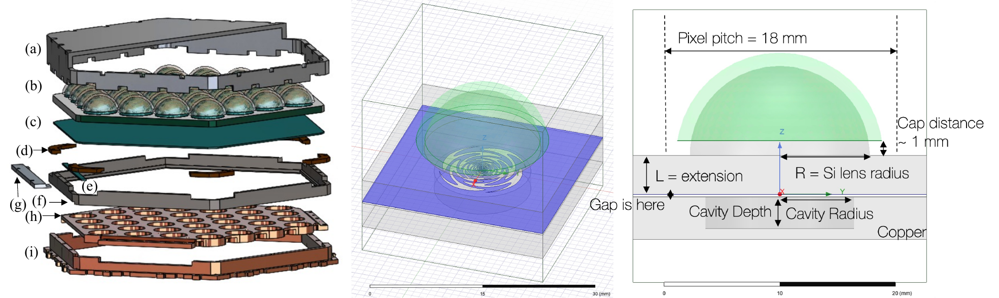
-1ex
-1.5ex
| =.8Parameter | Design Value/ Consideration |
|---|---|
| =.8Cavity Radius | 6.5 mm |
| =.8 Cavity Depth | 3 mm |
| =.8 Gap between extension and backshort | 250 um [\(\leq\)2% variation between 50-750um] |
| =.8 L/R ratio | 0.43 |
| =.8 Swiss Cheese backshort | performs comparably to standard flat backshort* |
0.5ex *Simulated forward integrated gain suggests new backshort performs better by \(\sim\)1%.
The pixel design was optimized using ANSYS HFSS simulations. As shown in Figure \(\ref{fig1}\), the geometry consists of a hemispherical lenslet with AR coating, the device and extension wafer, and the copper backshort. A new AR coating material using borosilicate glass was used and compared to traditional epoxy coatings (Aritoki Suzuki et al. 2012; A. Suzuki et al. 2016; B. Westbrook et al. 2018), which will be discussed in an upcoming paper. A primary goal of these studies was to optimize the backshort design. Limited space from UFM design required a compact backshort to accommodate the UMM readout hardware. As a solution, the ‘swiss cheese’ backshort was designed. It consists of a metal slab with a small cavity behind the antenna to recover power transmitted in the backlobe. Given the silicon half-space and AR-coated lenslet sitting above the antenna itself, less than 5% of the signal is in the backlobe. We aimed to perform comparably to or better than a traditional flat backshort sitting \(\lambda_{center}/4\) from the antenna plane, where \(\lambda_{center}\) corresponds to the central frequency of the combined 30 and 40 GHz bands.
-1ex
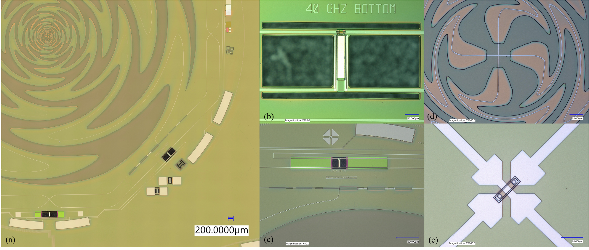
-0.5exEach pixel in the array is backed by a single cavity. The cavity radius and depth were optimized by using iterative sweeps in simulation and choosing values with maximum band averaged forward integrated gain (in the skyward direction) first between \(\pm30^{\circ}\) for coarse cuts, and then more finely between \(\pm13^{\circ}\) for the LAT and \(\pm17^{\circ}\) for the SAT Lyot stop (Ali, Adachi, Arnold, Ashton, Bazarko, Chinone, Coppi, Corbett, Crowley, Crowley, Devlin, Dicker, Duff, Ellis, Galitzki, Goeckner-Wald, Harrington, Healy, Hill, Ho, Hubmayr, Keating, Kiuchi, Kusaka, Lee, Ludlam, Mangu, et al. 2020; Galitzki et al. 2018; Harrington et al. 2020; Zhu et al. 2021).
The gap between the extension wafer and the copper backshort piece was investigated to see how deviations from a 250um gap would also affect pixel performance. We saw less than 2% variation in forward integrated gain for gap sizes between 50 and 750um. Cross-talk effects are considered negligible with changes in gap dimension, because (1) the propagation space here is much smaller than if a flat backshort is used and (2) very little power is in the backlobe, as stated earlier.
The ratio of the silicon extension (L) to the radius of the silicon lenslet (R) is defined as the L/R ratio. This parameter tunes how effectively the antenna is the focal point of the effective ellipsoid made by the lenslet plus extension geometry. We tuned this parameter in simulation to optimize pixel performance by varying the extension length with respect to a fixed lenslet radius. The final optimized L/R ratio was 0.43.
The conclusion of these optimizations was that the swiss cheese backshort performs better or comparably to a standard flat backshort (see Figure \(\ref{fig4}\)(a)). A summary of final design values used are listed in Table \(\ref{tab1}\).
5.6.2 Fabrication and Ongoing Testing
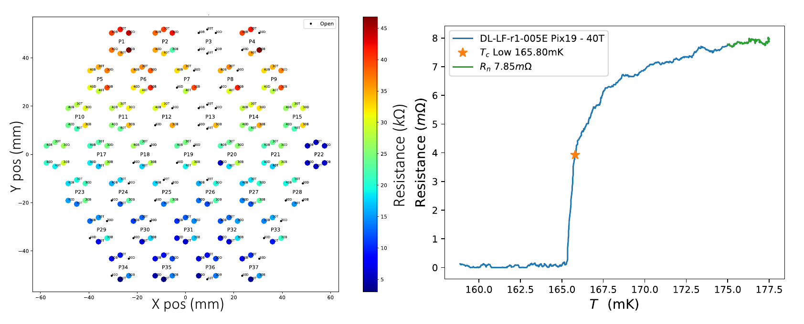
-1ex-1ex
-0.5ex
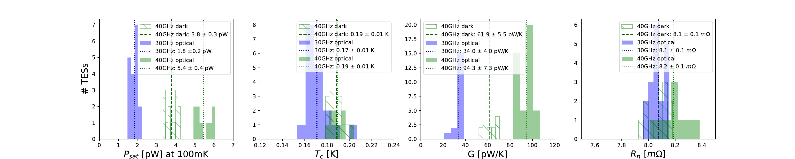
-0.5exFabrication of the LF array is done at the Marvell Nanofabrication Laboratory at UC Berkeley. The fabrication flow is adapted from the fabrication flow used by UC Berkeley for the Simons Array focal planes (Aritoki Suzuki et al. 2012; A. Suzuki et al. 2016; B. Westbrook et al. 2018; Benjamin Westbrook et al. 2022).
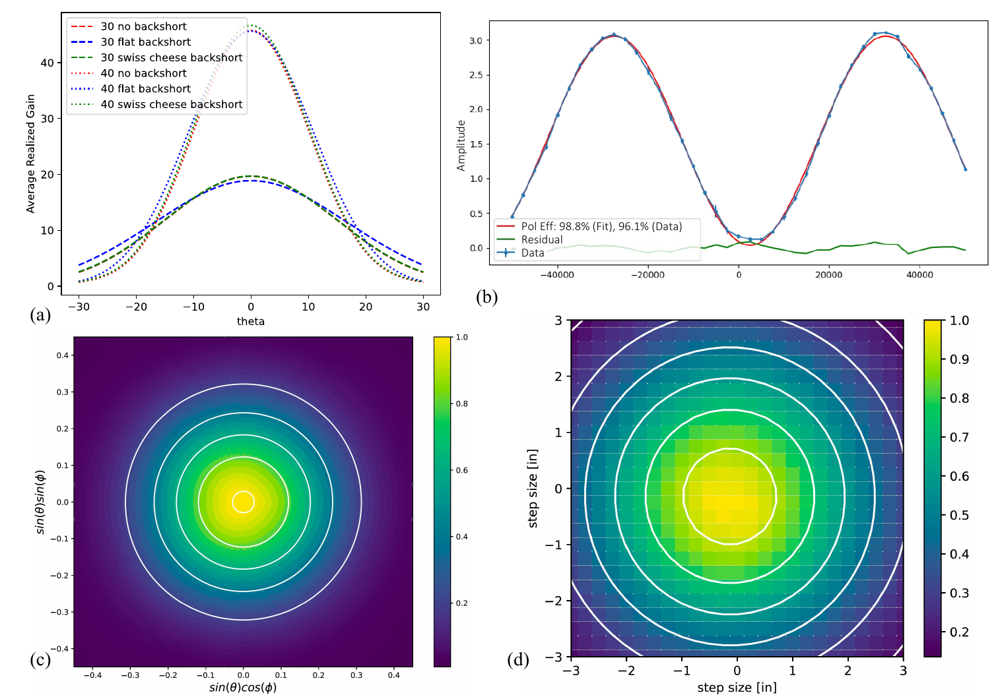
-0.5ex-1ex
The primary challenge to fabricating these devices is to realize the bolometric and radio frequency (RF) features simultaneously. Fabrication begins with 6 inch silicon wafers with a \(\sim\)600 nm film of low-pressure chemical vapor deposition low-stress silicon nitride grown on both sides of the wafer in a furnace. The base of the RF circuit is created when a patterned layer of \(\sim\)340 nm thick Nb is coated with \(\sim\)1.0 \(\mu\)m of silicon nitride. The nitride serves as the dielectric layer for the RF circuitry. Next, the Ti load resistor and AlMn TES are deposited, patterned and etched. The Ti resistor is \(\sim\)80 nm thick and the AlMn TES is \(\sim\)400 nm thick. An encapsulating layer of passivating silicon nitride is patterned over the load resistor and TES to protect these layers from the subsequent Nb etch and serves as a long term passivation layer for the devices.
The RF circuit is then completed with the deposition and etching of a second Nb layer that forms both the RF microstrip line and the TES wiring layers. This wiring layer also provides access to the readout with bond pads at the edge of the wafer. We then evaporate \(\sim\)500 nm of Pd on to the bolometer islands using a lift-off process. At this point, the wafer is ready for release and packaging. A layer of photoresist is patterned, allowing access to the silicon nitride layer that will eventually support the suspended bolometer arms. This nitride is etched before the wafer is diced into its final hexagonal shape with chamfers at the corners. The bolometers are released with xenon difluoride (XeF\(_{2}\)) vapor providing thermal isolation of the TES from the rest of the substrate. With a final photoresist ash, the wafer is ready for inspection and characterization.
Current testing result highlights are showing in Figures \(\ref{fig3}\), \(\ref{fig5}\), and \(\ref{fig4}\). Thermal parameters including normal resistance, transition temperature, saturation power, and thermal conductance have met requirements, and wafers are showing promise of good warm electrical yields as seen in Figures \(\ref{fig3}\) and \(\ref{fig5}\). Ongoing optical testing show good polarization efficiency, and beam measurements have low ellipticity and are consistent with simulated beam profiles (Figure \(\ref{fig4}\)). Full SO LF testing results will be detailed in an upcoming paper.
5.6.3 Current Status and Conclusions
SO is currently deploying the LAT and three SATs, and full science observations will begin in 2024. The LAT will consist of 444 LF detectors on the sky, with a future SAT to put an additional 1,036 LF detectors on the sky. The LF detectors will characterize synchrotron emission, an important foreground to understand and subtract from CMB maps to achieve key science targets. SO LF fabrication and testing is ongoing as described, with good TES thermal parameters, warm electrical yield, polarization efficiency, and round beams.